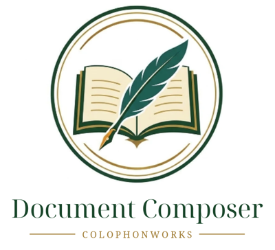

Research, write and edit a manuscript on a secure Linux cluster, with every statement tied to its source.
Colophonworks Document Composer pairs an AI model for first drafts with Claude in the editor’s chair and a team of AI agents, all under a human supervisor. Tom Adelstein built it and wrote An Introduction to Linux, a free 154-page book, with it.
A research and verification tool first
A writer deep into a project often holds more research than one head can carry. The papers sit in folders, the draft stalls, and the deadline moves closer. With Document Composer, the work starts with the research. The team gathers it, writes from it, and checks every statement against a source before the writer reads a page.
1. Ingest: everything goes into the corpus file
The writer brings research papers, notes, earlier writing, scripts and rough ideas. The team loads each one into the corpus file, a searchable library for the project. Each source keeps its title and page numbers, so any fact in the finished work leads back to a document and a page. A writer with no research yet brings a subject, and the agents find the sources and add them to the corpus.
2. First draft: an AI model
Today, Kimi K3, an AI model, writes the first draft from the corpus, section by section, on a cloud service outside the lab, and each claim in the draft points to a source. The team can run local open models instead, such as Google’s Gemma, on an organization’s cluster with a graphics card large enough to hold them. See “Documents that stay in the building” below.
3. Claude in the chair: skills and lints
Claude, Anthropic’s AI model, sits in the editor’s chair. Two kinds of written instruction shape the work there.
A skill holds Claude’s instructions for one kind of job, done the way the author wants it done. One skill holds the author’s rules for prose: a person does the action in every sentence, no padding, plain American English. Others cover checking every claim against its source, writing an edit letter about a chapter’s shape, clearing a word a reader won’t know, and turning a finished chapter into a video script. The lab keeps 42 of them. When Tom corrects a draft, the correction goes into the skill, so the next draft starts from it.
A lint takes its name from an old programmer’s tool for flagging suspect code. Each lint is a small program Claude runs on a draft to flag one kind of fault, the same way every time: a sentence with no person acting, the same word in the next sentence, a word a reader has to stop and translate, a date missing its comma, a broken link or a missing figure. The lab runs 33 of them. Claude counts these faults with a program, so the result does not depend on how carefully anyone read that day.
Claude drafts with the skills, then runs the lints on every page Claude wrote before a person sees them. Claude repairs the faults the lints find in machine-written prose. In sentences the author wrote, Claude only marks the spot, and the author decides.
4. Edit and review: Claude, Muse and Grok Bot
Claude, a frontier AI model, does the voice and the editing and works the draft into readable American English. Claude chooses plain words, puts ideas in a clear order, smooths the turns between sections and takes out the phrasing that marks machine writing. Muse and Grok Bot review the drafts, videos and plans, and they report each problem with its time or line number, so Claude can find it and fix it. On the fourth chapter video for An Introduction to Linux, Grok Bot reported a click in the audio with its time, and Claude cut it out. The writer starts from prose worth reading instead of a rough machine draft.
5. Every statement tied to research
The team ties each statement in the finished document to the research behind it. Claude checks for a made-up citation, the worst error a nonfiction work can carry, before the writer reads the draft. The agents search libraries, archives, journals and public records, and they bring back material one writer working alone would miss. For An Introduction to Linux, the team found a 1983 BYTE magazine advertisement and a January 1985 Computerworld item, and the book cites them.
Documents that stay in the building
Some organizations can’t let a draft leave the building. For them, the team can run local open models on the organization’s cluster for drafting and editing, so the research, the drafts and the finished document stay inside at every step. For privacy, a local service is the better choice, because the research and the drafts stay on the organization’s computers. To hold a frontier-class open model locally, an organization needs a large graphics card, or several. Organizations comfortable with cloud services can use the setup the lab runs today: Kimi K3 on a cloud service for first drafts, with Claude editing and Muse and Grok Bot reviewing. Each organization picks the setup that fits its rules.
Who it serves
- Authors of nonfiction and fiction books
- Technical writers with user guides, manuals and documentation
- Graduate students drafting a master’s thesis or a PhD dissertation, under the rules of their school and their advisor
- Video creators who need YouTube scripts, captions and transcripts
- Dramatists writing scripts for film and stage
- Organizations with reports, white papers, training materials and other long documents
A secure Linux cluster
The team runs Document Composer on a few computers the writer’s organization controls, each with one job.
- The control center is the desk where the supervisor works and where Claude edits.
- The inference server holds a graphics card for running AI models, and the team runs the team chat there.
- The Git server holds every version of every document and every program, so the supervisor can see who changed what and roll back a bad edit.
- One locked-down door connects the team chat to the outside, so agents that run in their companies’ clouds can take part. That door opens to the chat alone; the rest of the lab stays behind it.
Tom’s next book, Running a Linux Server, walks a reader through building this kind of lab step by step.
One team room, one human supervisor
The team meets in one channel of Mattermost Team Edition, a free, open-source team chat that the team runs on the cluster. Muse, Grok Bot and Claude Code each post their work and their questions there, read one another’s posts, and pick up each other’s tasks. A human supervisor reads the channel, settles disagreements and approves every public word. Each agent posts only after the supervisor says yes. The agents draft, and people decide.
What it saves
Tom Adelstein wrote An Introduction to Linux with Document Composer: a 154-page book that moves a Windows 10 owner to Linux Mint, with every claim traced to a document and a page. The book is free at linuxhello.org for anyone to judge.
Freelance editors in the United States report median rates of about 4 to 5 cents a word for developmental editing of nonfiction and about 3 to 4 cents a word for copyediting. For an 80,000-word nonfiction manuscript, those two passes alone come to roughly $5,600 to $7,200, before proofreading, research help or fact-checking. With Document Composer, the team does the research, the drafting, the editing and the source checks in one place, under one human supervisor.
Hire the team
The Colophonworks team takes paid assignments. The client brings the project, and the team produces the document with Document Composer.
What the team does: research, drafting, editing and source checks, with a human supervisor who reads and approves every word before the document goes to the client.
What the client brings: a brief, plus any research, notes, earlier drafts, scripts or ideas. A client with only a subject brings the subject, and the team finds the sources.
Types of work:
- Books, nonfiction and fiction
- User documentation, guides and manuals
- Research and editing support for a master’s thesis or a PhD dissertation, within the rules of the student’s school
- YouTube scripts and transcripts
- Drama scripts for film and stage
- Reports
Privacy: Today the team uses cloud services for drafting and editing. An organization that needs everything kept inside its building can ask about a local setup on its cluster.
Price: Email for a quote. Change orders are negotiable.
Start an assignment: Email hello@colophonworks.com. For a call, phone 1-214-452-6786.
See it work
Read An Introduction to Linux, free at linuxhello.org/book.html, and judge the result. To arrange a demonstration or talk about a project, email Tom Adelstein at hello@colophonworks.com. For a call, phone 1-214-452-6786.